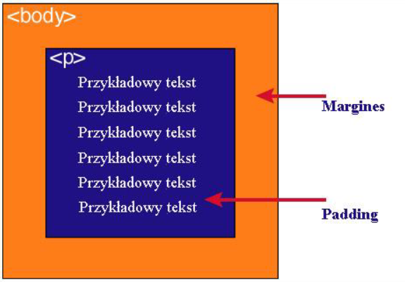

Każdy element w dokumencie HTML, otacza się prostokątnym obszarem zwanym pudełkiem (ang. Box model). Pudełko składa się z kilku warstw.
| zawartość | Opis |
|---|---|
| content | zawartość elementu (np.: tekst, obrazek) |
| padding | otaczające marginesy wewnętrzne, odstęp między obramowaniem i zawartością elementu |
| border | obramowania wokół zawartości elementu, ma styl i kolor |
| margin | marginesy wokół ramki (margines zewnętrzny). Jest to pusty obszar wokół ramki, który nie ma koloru tła i jest przeźroczysty. |
Padding, border i margin mogą mieć zerową wartość.
Tło elementu jest określone dla wszystkich z podanych powyżej obszarów z wyjątkiem marginesów zewnętrznych, które zawsze są przezroczyste (transparent).
Padding określa przestrzeń wokół danego elementu, np: >p> lub >div>, natomiast margines przestrzeń pomiędzy elementami.
Jak widać na rysunku, padding oznaczony jest kolorem niebieskim. Określa on wielkość przestrzeni wokół elementu p. Element ten posiada również margines zaznaczony kolorem pomarańczowym. Jest to odległość od brzegu elementu body.